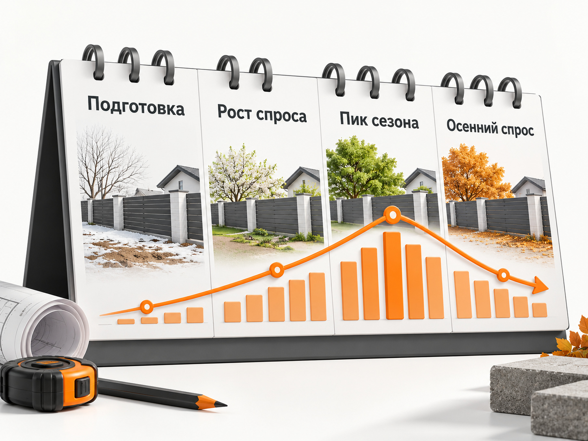

Блог о платном трафике
Продвижение установки заборов в 2026 году: инструкция и прогноз
Установка заборов хорошо подходит для интернет-рекламы: спрос уже сформирован, люди ищут конкретные материалы, стоимость, монтаж под ключ и подрядчика в своём городе. При этом ниша сезонная и конкурентная, а дешёвая заявка ещё не означает выгодный заказ.
Если бы мне нужно было продвигать компанию по установке заборов в 2026 году, основным платным каналом я бы рассматривал Яндекс Директ. Параллельно проверил бы Авито, а при достаточном бюджете - VK Рекламу. SEO имеет смысл развивать отдельно как долгосрочный источник спроса.
Главная задача рекламы здесь выглядит так:
реклама -> обращение -> квалифицированный лид -> замер -> договор -> монтаж
Поэтому прогноз нужно строить не от кликов и даже не от количества заявок, а от стоимости реального договора.
Какие результаты сейчас встречаются в рекламе заборов
Свежих кейсов в этой нише действительно много, но цифры между ними отличаются в несколько раз. Регион, материал забора, сезон, сайт, оффер и способ подсчёта лида сильно влияют на результат.
В кейсе компании по установке заборов и ворот в Красноярске за период с 11 августа по 7 сентября 2026 года потрачено 72 465,74 ₽ и зафиксировано 65 конверсий без учёта звонков и переписок. Расчётная стоимость конверсии составляет 1 114,86 ₽.
В другом кейсе по заборам под ключ в Краснодаре и области рекламные расходы составили 135 000 ₽. Получено 115 обращений и 17 продаж. Если пересчитать опубликованные данные, получается:
- CPL - около 1 174 ₽;
- конверсия лида в продажу - 14,8%;
- стоимость продажи по рекламным расходам - около 7 941 ₽;
- выручка - 1 326 000 ₽.
Есть и существенно более дорогие результаты. В московском проекте по продаже профнастила и штакетника из Яндекс Директа за 2,5 месяца потрачено 1,322 млн ₽, получено 541 обращение и 60 продаж. CPL по исходным данным составляет около 2 444 ₽, конверсия в продажу - 11,1%, стоимость продажи - около 22 033 ₽. Это продажа материалов, а не монтаж под ключ, поэтому напрямую переносить цифры на установку заборов нельзя, но кейс хорошо показывает влияние дорогого московского аукциона. Основной объём там дала РСЯ, а Поиск оказался значительно дороже.
Ещё показательнее московский кейс производителя заборов полного цикла. Две команды работали примерно с одинаковыми бюджетами около 800 000 ₽. У одной стоимость качественного лида была около 7 600 ₽, у второй около 5 000 ₽. Но первая стратегия принесла примерно 5,6 млн ₽ выручки, вторая - около 1,6 млн ₽. Более дорогой лид оказался намного выгоднее.
Это как раз та ниша, где нельзя оптимизировать рекламу только по CPL.
Какой CPL закладывать в прогноз
Единой средней стоимости заявки на установку забора нет.
Для первоначального медиаплана я бы использовал такой расчётный диапазон:
| Показатель | Рабочий ориентир для первоначального прогноза |
|---|---|
| Сырая заявка | 1 500-3 000 ₽ |
| Квалифицированный лид | 3 000-8 000 ₽ |
| Конверсия лида в продажу | 8-15% |
| Стоимость продажи | примерно 10 000-37 500 ₽ |
Это не средние показатели рынка и не обещание результата. Это диапазон, который я бы использовал до появления собственной статистики, опираясь на актуальные кейсы.
В сильном региональном проекте сырая заявка может стоить около 1 000-1 500 ₽. В Москве, Московской области, в пиковый сезон или при слабом сайте цена легко будет значительно выше.
Отдельно нужно следить за определением слова «лид». Заполненная форма, клик по телефону, состоявшийся разговор, человек, которому действительно нужен забор, и клиент, согласившийся на замер - пять разных вещей.
Подробнее эту проблему я разбирал в статье «Нецелевые и некачественные лиды из Яндекс Директа».
Как рассчитать рекламный бюджет на установку заборов
Я бы не начинал с вопроса «сколько нужно тратить в месяц». Сначала нужно определить, сколько заказов способны выполнить бригады.
Формула простая:
Нужное количество лидов = план продаж / конверсия лида в продажу
После этого:
Рекламный бюджет = количество лидов × CPL
Предположим, компании нужно 10 новых договоров в месяц.
Сильный сценарий
CPL - 1 500 ₽.
Конверсия лида в продажу - 15%.
10 / 0,15 = примерно 67 лидов.
67 × 1 500 ₽ = около 100 500 ₽ рекламного бюджета.
Рабочий сценарий
CPL - 2 000 ₽.
Конверсия - 12%.
10 / 0,12 = примерно 84 лида.
84 × 2 000 ₽ = около 168 000 ₽.
Осторожный сценарий
CPL - 3 000 ₽.
Конверсия - 8%.
10 / 0,08 = 125 лидов.
125 × 3 000 ₽ = 375 000 ₽.
Получается огромная вилка: для одинаковых 10 продаж может потребоваться примерно от 100 000 до 375 000 ₽.
Именно поэтому чужой кейс «получили лиды по 1 000 ₽» практически ничего не говорит о бюджете конкретной компании.
Подробнее саму механику расчёта я показывал в материале «Прогноз бюджета Яндекс Директ».

Сначала посчитайте допустимую стоимость продажи
Перед запуском нужно определить, сколько бизнес вообще может платить за привлечение клиента.
Для этого недостаточно среднего чека. Из заказа нужно вычесть материалы, монтаж, доставку, зарплату бригады, замер, налоги и остальные переменные расходы.
Например, после всех переменных затрат с одного объекта остаётся 40 000 ₽.
Если бизнес готов отдавать на привлечение клиента максимум 30% этой суммы:
40 000 × 30% = 12 000 ₽.
Значит, реклама должна приводить продажу максимум примерно за 12 000 ₽.
Если лид стоит 2 000 ₽, необходимая конверсия в продажу:
2 000 / 12 000 × 100% = 16,7%.
Если фактическая конверсия окажется 8%, экономика уже не сойдётся.
Поэтому нормальная конверсия лида в продажу определяется не чужими кейсами, а экономикой конкретного бизнеса.
Кого рекламировать
Основная аудитория - владельцы частных домов, дач, земельных участков и строящихся объектов.
Но внутри неё есть совершенно разные сегменты.
Человек, которому нужна дешёвая сетка для дачного участка, и владелец коттеджа, выбирающий забор-жалюзи с автоматическими воротами, могут отличаться по бюджету в несколько раз.
Поэтому я бы разделял как минимум:
- профнастил;
- евроштакетник;
- 3D-сетку;
- рабицу;
- заборы-жалюзи;
- ворота и калитки;
- автоматику;
- комплексный монтаж под ключ.
Разделение нужно не ради красивой структуры рекламного кабинета. У каждого направления свои цена, маржинальность, спрос, конкуренты и вероятность продажи.
Какой оффер использовать
Самый слабый вариант:
«Заборы недорого»
Клиенту всё равно придётся выяснять цену, материал, сроки, гарантию и что именно входит в монтаж.
Сильнее работают предложения, которые сокращают неопределённость:
«Рассчитаем стоимость забора под ключ по вашим размерам»
«Бесплатный замер участка и фиксированная смета», если замер действительно бесплатный.
«Забор из профнастила под ключ с монтажом»
«Расчёт забора с воротами и калиткой»
На сайте я бы обязательно показывал реальные объекты, а не только идеальные изображения материалов.
В свежих кейсах по нише регулярно повторяется одна и та же механика: реальные фотографии готовых объектов, отдельные предложения по материалам, понятный расчёт стоимости и конкретные условия работают лучше абстрактной рекламы «качественных заборов».
Нельзя обещать «монтаж за один день», «без предоплаты», «гарантия 10 лет» или другие преимущества просто потому, что они хорошо выглядят в рекламе. Оффер должен соответствовать реальным условиям компании.
Каким должен быть сайт
В этой нише я бы не отправлял весь трафик на одну общую страницу «Заборы».
Лучше сделать отдельные посадочные страницы хотя бы для основных материалов:
- заборы из профнастила;
- евроштакетник;
- 3D-сетка;
- заборы-жалюзи;
- ворота и калитки.
Человек по запросу «забор из евроштакетника под ключ» должен попадать сразу на соответствующую страницу.
На ней нужны реальные фотографии, варианты исполнения, понятный принцип расчёта цены, этапы монтажа, сроки, гарантия, территория работы, отзывы и форма расчёта.
Полезен простой калькулятор или квиз:
длина -> высота -> материал -> ворота -> калитка -> контакт.
Но я бы не превращал квиз в игру из десяти экранов. Его задача - получить необходимые параметры и квалифицировать обращение.
Один из свежих кейсов по заборам прямо использовал отдельные страницы под материалы и встроенный расчёт стоимости.
Яндекс Директ для установки заборов
В 2026 году рекламу можно строить внутри Единой перфоманс-кампании. Яндекс позволяет отдельно работать с Поиском, РСЯ и Картами, а на уровне групп использовать географию, автотаргетинг, тематические слова, интересы и привычки и сегменты аудитории.
Подробнее базовую настройку я разбирал отдельно в инструкции по Яндекс Директу.
Поиск
Поиск здесь очевидно нужен, потому что спрос сформирован.
Человек сам вводит:
«установка забора под ключ»
«забор из профнастила с установкой»
«евроштакетник под ключ»
«забор цена с монтажом»
«установка забора [город]»
Это горячая аудитория.
Но я не стал бы собирать только несколько самых очевидных фраз. Нужно разделять спрос по материалам, типу объекта, наличию ворот, географии и намерению.
Особенно внимательно нужно смотреть реальные поисковые запросы после запуска.
Слово «забор» может привести огромное количество нерелевантного спроса:
- сделать своими руками;
- схема установки;
- чертёж;
- фото;
- ремонт;
- купить только материал;
- вакансии монтажников;
- реклама на заборе;
- баннер на забор.
Если компания занимается только монтажом под ключ, запросы исключительно на покупку материала тоже нужно анализировать отдельно.
РСЯ
Я бы обязательно тестировал РСЯ, причём не только как второстепенный канал.
Свежие кейсы показывают, что в отдельных проектах именно РСЯ становится главным источником объёма. В московском кейсе по профлисту и штакетнику основной бюджет и большинство заявок пришлись именно на сети, поскольку Поиск оказался слишком дорогим.
Это не означает, что РСЯ всегда лучше.
Поиск и РСЯ нужно считать отдельно:
Поиск - человек уже ищет подрядчика.
РСЯ - алгоритм находит потенциально подходящего пользователя до или вне конкретного поискового запроса.
Для сетей я бы тестировал реальные фотографии:
- готовый объект;
- крупный план материала;
- аккуратный процесс монтажа;
- забор вместе с воротами;
- объект в конкретном типе посёлка.
Креатив должен сразу показывать, что продаётся именно установка забора, а не лист профнастила.
География рекламы
Для установщиков география особенно важна.
Нет смысла получать дешёвый лид за 80 километров от зоны работы, если доставка и выезд бригады съедают прибыль.
Я бы заранее разделил территорию на:
- основной город;
- ближайшие районы;
- дальние населённые пункты;
- коттеджные посёлки и СНТ, если там достаточно спроса.
После накопления статистики регионы нужно сравнивать уже по стоимости продажи, а не только по CPL.
Иногда область даёт заявку дороже, но средний объект там крупнее. Тогда дорогой лид может быть выгоднее городского.
Ретаргетинг
Для заборов ретаргетинг логичен, потому что человек редко выбирает подрядчика за пять минут.
Он может:
посмотреть несколько сайтов -> получить расчёты -> обсудить бюджет -> вернуться через неделю.
Но я бы не запускал отдельный ретаргетинг просто потому, что «так положено».
Если трафика мало, аудитория будет слишком маленькой. А обычная РСЯ и без отдельной кампании использует большое количество поведенческих сигналов.
Отдельный ретаргетинг имеет смысл, когда можно показать человеку другой аргумент:
- реальные выполненные объекты;
- другой материал;
- расчёт стоимости;
- предложение замера;
- информацию о гарантии;
- сроки ближайшего монтажа.
Какую стратегию использовать
Я бы не дробил небольшой региональный проект на десять отдельных кампаний.
Автоматическим стратегиям нужны данные. Если каждая кампания получает по две конверсии в неделю, алгоритму практически не на чем учиться.
Мой практический ориентир - стараться получать порядка 15-20 целевых конверсий в неделю на кампанию. Если объёма нет, лучше не дробить статистику без необходимости.
При достаточном количестве данных можно оптимизироваться на заявки.
Следующий шаг - передавать обратно уже квалифицированные лиды и продажи.
Аналитика важнее количества заявок
Для установки заборов я бы считал минимум четыре этапа:
заявка -> квалифицированный лид -> замер -> договор
В Метрике отдельно фиксируются формы, звонки и другие онлайн-действия.
Но сделка происходит позже. Поэтому наиболее полезная схема - передавать данные из CRM обратно в Метрику.
Например:
- заявка;
- заявка прошла квалификацию;
- назначен замер;
- заключён договор;
- получена оплата.
Тогда можно увидеть, что кампания А даёт лид по 1 200 ₽, но договор по 30 000 ₽, а кампания Б приводит заявку по 2 500 ₽ и договор по 12 000 ₽.
Вторую нужно масштабировать, хотя в рекламном кабинете её CPL хуже.
Сезонность установки заборов
Подготовку рекламы лучше начинать до пика спроса.
В свежих и недавних кейсах основной период работы приходится примерно на весну, лето и начало осени. Например, один крупный VK-кейс шёл с апреля по ноябрь 2025 года, а пик объёма приходился на июнь-август.
Для конкретного региона сезон будет зависеть от погоды, состояния грунта и особенностей строительства.
Практически я бы действовал так:
- до сезона подготовить сайт, аналитику и кампании;
- первые данные получить ещё до максимального спроса;
- к пику уже знать рабочие материалы, запросы и объявления;
- в пик не экспериментировать всем бюджетом одновременно;
- осенью отдельно работать с теми, кто откладывал установку.
Запускаться впервые в середине максимального спроса можно, но это обычно означает одновременно дорогой аукцион и отсутствие собственной статистики.

Авито
Для этой ниши Авито я бы обязательно проверял.
Люди привыкли искать там строительные услуги и сравнивать исполнителей. Хорошо работают отдельные объявления по материалам и услугам, реальные фотографии, цены или понятная логика расчёта и география.
В одном опубликованном кейсе компании по производству и установке заборов в Волгограде после работы с Авито количество обращений выросло с 12 до 34 в месяц. Это один конкретный пример, поэтому переносить его цифры на другой город нельзя.
Я бы оценивал Авито параллельно с Директом по одной воронке:
обращение -> квалификация -> замер -> договор.
VK Реклама
VK интересен тем, что заборы хорошо показываются визуально.
В кейсе по Магнитогорску за сезон с апреля по ноябрь 2025 года было потрачено 800 000 ₽ и получено 983 заявки. Расчётный CPL - около 814 ₽. Использовались реальные объекты, географическая привязка и лид-формы.
Это хороший пример того, что Яндекс Директ не является единственным рабочим каналом.
Но я бы всё равно начинал со сформированного спроса и уже затем подключал охватные источники, если позволяет бюджет.
SEO
Установка заборов хорошо подходит для поискового продвижения.
Структура сайта может строиться вокруг отдельных направлений:
- установка заборов;
- заборы из профнастила;
- евроштакетник;
- 3D-сетка;
- заборы-жалюзи;
- ворота;
- отдельные города и районы, если компания там действительно работает.
Дополнительно полезны страницы выполненных объектов.
Не просто «Наши работы», а полноценный кейс:
«Забор из евроштакетника 42 метра в [населённый пункт]»
С фотографиями, материалом, особенностями участка, сроком монтажа и конечным результатом.
Такие страницы одновременно помогают SEO, рекламе и доверию потенциального клиента.
Яндекс Карты
Если есть офис, производство, выставочная площадка или постоянная точка присутствия, карточку организации тоже нужно развивать.
Для клиента полезны:
- реальные фотографии;
- отзывы;
- режим работы;
- телефон;
- сайт;
- примеры объектов;
- список услуг.
Карты я бы не рассматривал как замену Директу, но для локального бизнеса это ещё одна точка контакта.
Основные ошибки при продвижении заборов
Первая ошибка - считать все заявки одинаковыми.
Вторая - вести весь трафик на одну страницу независимо от типа забора.
Третья - пытаться выиграть только минимальной ценой.
Четвёртая - считать кликом по телефону реальный звонок.
Пятая - не разделять Поиск и РСЯ в аналитике.
Шестая - не учитывать географию и стоимость выезда бригады.
Седьмая - запускать рекламу в разгар сезона без заранее настроенной аналитики.
Восьмая - оптимизировать кампании на любую отправленную форму вместо квалифицированных обращений и договоров.
Девятая - увеличивать бюджет, когда отдел продаж или монтажные бригады уже не успевают обрабатывать поток.
Последняя ситуация особенно неприятна: реклама становится эффективнее, лидов больше, но клиенты неделями ждут замер и уходят к конкурентам.
Пошаговый план запуска
Я бы запускал продвижение установки заборов так:
- Посчитать маржу и максимально допустимую стоимость продажи.
- Определить месячную загрузку монтажных бригад.
- Рассчитать требуемое количество лидов.
- Сделать отдельные посадочные под основные типы заборов.
- Установить Метрику и коллтрекинг.
- Настроить передачу квалифицированных лидов и продаж.
- Запустить Поиск по сформированному спросу.
- Параллельно протестировать РСЯ отдельным бюджетом.
- Разделить статистику по материалам и географии.
- Через первые данные определить реальный CPL и качество обращений.
- Отключить нерентабельные сегменты.
- Масштабировать группы, которые дают договоры.
- Протестировать Авито.
- При наличии бюджета добавить VK Рекламу.
- Параллельно развивать SEO.
Итоговый прогноз
Для компании по установке заборов я бы на этапе медиаплана ориентировался не на обещание «лиды по 1 000 ₽», а на более широкий коридор.
Для первого расчёта:
сырая заявка - 1 500-3 000 ₽;
конверсия лида в продажу - 8-15%;
стоимость продажи - примерно 10 000-37 500 ₽.
В отдельных сильных проектах результаты могут быть лучше. В Москве, в перегретом аукционе или при слабом сайте - значительно хуже.
Если нужно 10 договоров в месяц, рабочий пример при CPL 2 000 ₽ и конверсии 12% даёт около 84 обращений и примерно 168 000 ₽ рекламного бюджета.
Но главный показатель после запуска должен быть другим:
сколько денег компания потратила на рекламу, чтобы получить один прибыльный договор.
Свежий московский кейс, где более дорогие качественные лиды дали в 3,5 раза больше выручки при сопоставимом бюджете, хорошо показывает, почему для установки заборов это важнее минимального CPL.